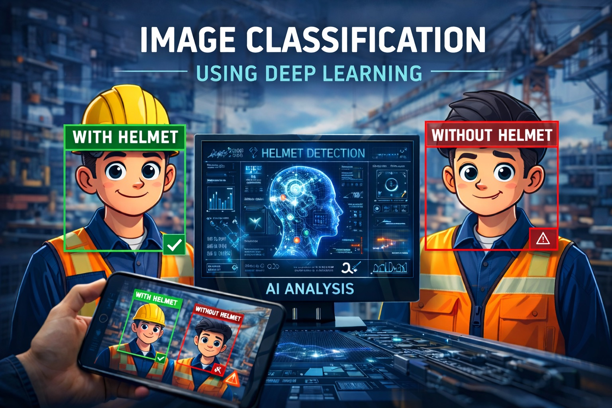

0
Featured Projects
Applied Machine Learning | University of Maryland
I'm Sahil Chaudhari, an MS student in Applied Machine Learning at UMD. I work across data pipelines, model evaluation, and deployment-minded ML systems with a focus on reliability.
Featured Projects
Internships
Current GPA (UMD)
MS Journey
I am Sahil Chaudhari, a Master's student in Applied Machine Learning at the University of Maryland, College Park, with a strong interest in building reliable and scalable ML systems. My work focuses on taking models beyond experimentation, from preprocessing and feature engineering to evaluation, optimization, and deployment.
I have worked on projects ranging from backtesting quantitative trading strategies to building a fully local Retrieval-Augmented Generation (RAG) system. During internships, I applied geospatial clustering, automated decision systems, and large language models to solve practical operational and analytical challenges.
I enjoy understanding how models behave under the hood and improving them iteratively. Outside of work, I play guitar and follow anime and manga.
GPA: 4.00/4.00
GPA: 4.33/4.33
CPI: 7.85/10
Percentage: 88.77%
Percentage: 93%
Architected a four-stage LangChain pipeline that converts arbitrary web-recipe HTML into screen-reader-navigable instructions for blind and low-vision cooks, using an LLM-as-judge rubric and a critique-guided self-revision loop that rewrites each draft until every criterion passes, eliminating fine-tuning and human-in-the-loop review while keeping failure modes isolated to single pipeline stages for targeted prompt fixes.
Used geospatial analysis, automation, and machine learning to convert complex datasets into actionable insights. Worked across stock markets, sports analytics, social media, and environmental studies.
Improved business operations using dashboards and analytics for inventory, retention, and receivables monitoring. Linked NPS trends to practical retention and service-improvement actions.
Analyzed retention cohorts, CLTV, and regional product performance to guide growth strategy. Evaluated discount-driven behavior and segmentation opportunities for better targeting.
Clinical Q&A assistant grounded in trusted references for more reliable responses than LLM-only setup.

Helmet-compliance detection using CNNs and transfer learning with VGG16 for stronger safety automation.


Power BI dashboard backed by web-scraped IPL data for team, bowler, and match-level analysis.

Python pipeline that transforms multiple CSV inputs into correctly formatted individual PDF transcripts.

Multi-camera computer vision pipeline for synchronized object tracking and detection across overlapping fields of view.

Retrieval-augmented generation pipeline enhanced with convex optimization techniques for improved retrieval relevance and ranking.
Automated security toolkit for ethical hacking workflows, vulnerability scanning, and reconnaissance automation.

Anime recommendation and Q&A system using RAG over curated anime metadata, synopses, and user reviews.
No projects matched your current filter.
No skills matched your current search/filter.
Open to internships, collaborations, and research projects